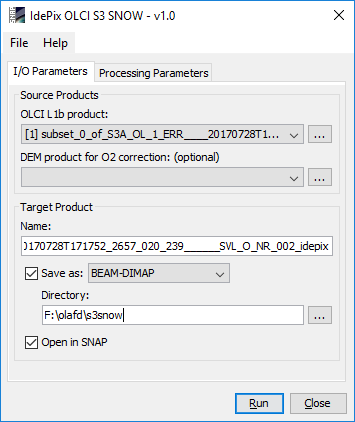
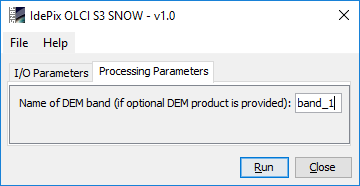
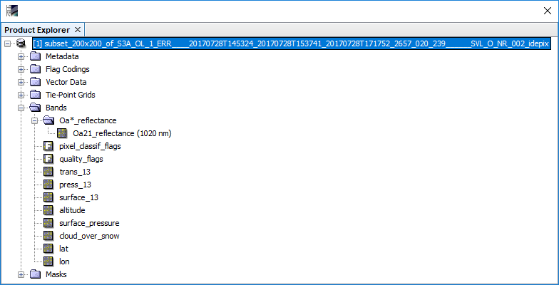
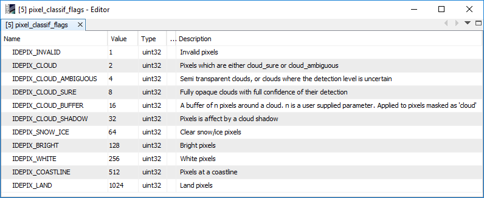
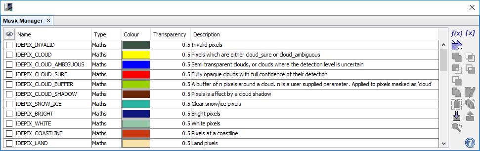

| Idepix OLCI plugin for S3-SNOW - Processor Description |
|

Used to select the IdePix OLCI source product. Use the ... buttons to open a data product currently not opened in the Sentinel Toolbox.
The following source products are supported for Idepix classification:
For detailed product descriptions and file naming conventions see the Sentinel-3 OLCI L1b Product User Guide (https://sentinel.esa.int/web/sentinel/user-guides/sentinel-3-olci/product-types/level-1b).
The following optional source products are supported for Idepix classification:
For more details on the O2 correction see the help documentation of the corresponding SNAP plugin which had to be installed together with this IdePix plugin.
Name: Used to specify the name of the target product.
Save to: Used to specify whether the target product should be saved to the file system. The combo box presents a list of file formats.
Open in SNAP: Used to specify whether the target product should be opened in the Sentinel Toolbox. When the target product is not saved, it is opened in the Sentinel Toolbox automatically.

Name of DEM band (if optional DEM product is provided):
The name of the altitude band in the optional DEM product. Mandatory if a DEM product is provided.
If no DEM product is provided, this parameter has no effect.
The IdePix OLCI processor for S3-Snow provides the following outputs:

Oa21_reflectance:
TOA reflectance for band 21 (1020nm).
trans_13:
The rectified and desmiled transmission for band 13 (761.25nm).
press_13:
The pressure for band 13 for a given rectified transmission, which would be measured in given band
without scattering. Useful for a first object height estimation for bright targets.
surface_13:
The rectified transmission for band 13, which would be measured without scattering ('surface transmission').
Useful only for comparison purposes.
surface_pressure:
The pressure at altitude of the surface.
cloud_over_snow:
Mask band indicating if there is cloud over snow (value 1.0) for the given pixel, 0.0 otherwise.
pixel_classif_flags:
Standard IdePix classification flag band (see below).
The Idepix classification result is written into the target product as a flag band named 'pixel_classif_flags'. This band holds integer values which for Sentinel-3 OLCI follow the flag coding shown below.

The target product also provides a corresponding flag mask to visualize the pixel classification through the SNAP Mask Manager:
